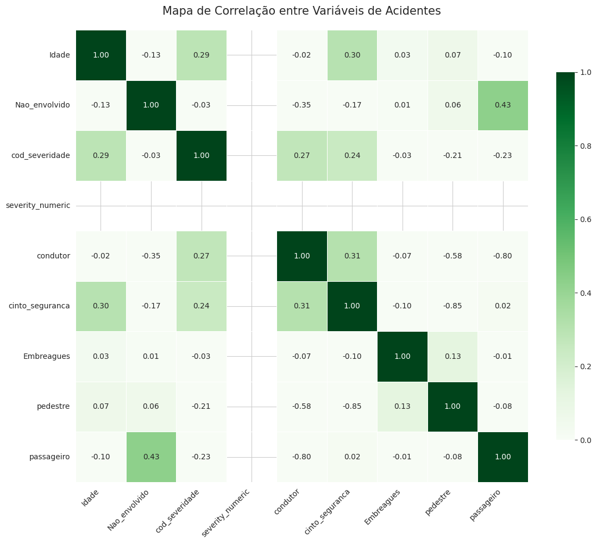

Main Graphics
-

Distribution by Severity Description
Most accidents were classified as "NON-FATAL" or "NO INJURIES", with a smaller number of "NOT INFORMED" cases and a minority of accidents resulting in "FATAL" outcomes.
-

Distribution by Gender
Most of the victims involved in the accidents are male (M), representing a large proportion compared to female (F). A small number of records are classified as "O" (others or not informed).
-

Distribution by Driver
Most individuals involved in the accidents were drivers (S), while a smaller number were non-drivers (N), such as passengers or pedestrians.
-

Distribution by Seat Belt Usage
Most of those involved were wearing a seat belt at the time of the accident, while a considerably smaller portion was not using the equipment.
-

Distribution by Intoxication
The vast majority of records indicate that drivers were not intoxicated at the time of the accident. Few cases were marked as "YES" (intoxicated), and there is also a portion labeled "NOT INFORMED".
-
Distribution by Vehicle Type
Most of the vehicles involved in the accidents are cars and motorcycles. Other types, such as buses, pickup trucks, and bicycles, appear in smaller numbers. Vehicles like tractors and trains were recorded in rare cases.
-
Distribution by Pedestrian
Most of the records do not involve pedestrians (N). Only a small fraction of the cases indicate the presence of pedestrians (S).
-

Distribution by Passenger
Most of the records refer to individuals who were not in the role of passenger (N), while a much smaller number refer to passengers (S).
-

Age Distribution by Severity
Accidents classified as "FATAL" or "NO INJURIES" involve a wider age range. The median age of those involved in fatal accidents is slightly lower than in other categories, indicating possible vulnerability among middle age groups.
-

Number of People Involved vs Severity
Accidents with greater severity tend to involve more people. This may indicate that more serious collisions occur in situations with fuller vehicles or multiple parties involved.
-
Distribution of Non-Involved by Severity
Most accidents, regardless of severity, involve few individuals classified as "Non-Involved." However, there are outliers indicating cases with high numbers, especially in the "NO INJURIES" category.
-

Age vs Seat Belt Usage
People who use seat belts tend to be older compared to those who do not, whose median age is considerably lower. Seat belt usage seems to be related to greater maturity or safety awareness.
-

Age vs Intoxication
Most individuals involved in accidents without signs of intoxication have a broader age distribution and a higher median age. Those who were intoxicated tend to be younger, suggesting a possible association between youth and risky behavior.
-
Accident Time vs Severity
Accidents with greater severity show a distribution concentrated in the night and early morning hours, suggesting a link with reduced visibility, fatigue, or recklessness during this period.
-

Involved Age vs Severity
There is no strong correlation between age and severity, but a higher concentration of less severe cases is observed in younger and adult age groups, while more severe cases are more widely distributed.
-

Gender vs Severity
Men are the majority at all severity levels, with a higher proportion in more severe accidents. This suggests that higher-risk behaviors in traffic may be more associated with the male gender.
-

Accident Distribution by Hour of the Day
The highest concentration of accidents occurs between 4 PM and 7 PM, suggesting a peak during the work return time. During the early morning, the numbers are significantly lower, except for a slight increase between 6 AM and 8 AM, indicating the start of morning traffic.
-

Number of Accidents by Accident Hour
The number of accidents increases significantly during peak hours, such as in the morning and late afternoon. This pattern suggests that traffic volume directly influences the occurrence of accidents.
-

Correlation Heatmap between Accident Variables
The correlation heatmap shows important relationships, such as the positive association between age and seat belt usage, and the negative correlation between being a passenger and being a driver. It also highlights the relationship between age and accident severity.